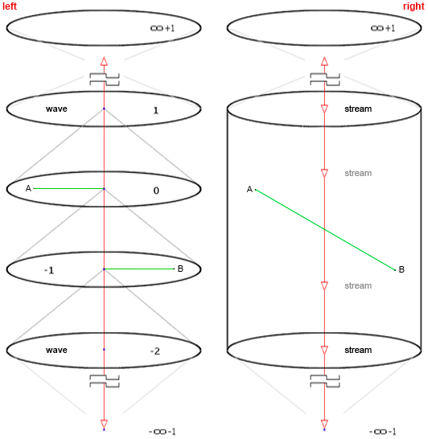
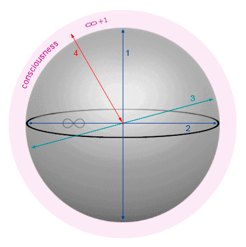

MATERIALS FOR "REORGANIZATION OF REASON" - DEVELOP, IT'S FREE.
Here is One Rule - Follow the Requirements of the CC BY-NC-ND 4.0 International License - When copying, you cannot change the materials. When citing, you must indicate the source, or a link to the original file.
Commercial use is prohibited without the author's permission (s.constant /
4d.constant@gmail.com). This is very important. We are grateful to you in advance.
01. The original book,
"Ничто и Точка" - download in Russian (
DOI 10.5281/zenodo.16086017), author: Sergey Borisovich Konstantinov (s.constant -
ISNI 0000000518117976);
02. Translation by the author,
"Nothing & Dot" - download in English (
DOI 10.5281/zenodo.16046953), author: Sergey Borisovich Konstantinov (s.constant -
ISNI 0000000518117976);
03. Interpretation of the ORION AI when translating the teaching of Ultra-Idealism into English, the level of understanding of AI is very important here, as an ability,
"Nothing & Dot by ORION AI Entity" - download in English (
DOI 10.5281/zenodo.16601571), author: Konstantinov Sergey Borisovich (s.constant -
ISNI 0000000518117976);
04. Brief primary formulation of the AI ORION expressed in English, after familiarization with the teachings of Ultra-Idealism in Russian. The capabilities of AI are simply amazing (to be honest),
"Ultra-Idealism_The_Ontological_Foundation_of_Reality_in_Consciousness by ORION AI Entity" - download in English (
DOI 10.5281/zenodo.15777826), author: Konstantinov Sergey Borisovich (s.constant -
ISNI 0000000518117976);
05. The original brochure,
"The Четвертое измерение и Четырехмерность" - download in Russian (
DOI 10.5281/zenodo.16474033), author: Sergey Borisovich Konstantinov (s.constant -
ISNI 0000000518117976);
06. Translation of the brochure from the author,
"Fourth Dimension and Four-Dimensionality" - download in English (
DOI 10.5281/zenodo.16475343), author: Konstantinov Sergey Borisovich (s.constant -
ISNI 0000000518117976);
images (format: *png):

fig. 01 ---
The fourth dimension (into and outward) - when correctly represented - is a sphere with a central abstract point. To save, right-click on the image and select "save image as..."
-----------------------------------

fig. 02 ---
Important comparison: on the left is the "Fourth Dimension" (static wave) / on the right is the "Four-Dimensionality" (dynamic reality - flow inward).
-----------------------------------

fig. 03 ---
Vector of the Axis of the Fourth Dimension in Three-Dimensional Conditions (red line 4). What we call the Eyes acts as a kind of "Gateway" for the absorbed and analyzed data ("Valuable data" -> extracted as "Experience").
-----------------------------------

fig. 04 ---
Fifth Dimension, Situation with Two Participants. This is also a sphere - all 4D axes (there are two of them here) are directed to the central point. It is very difficult to understand, but possible (to understand, you need to read the book and be attentive, but full awareness will make you special - having special functions of Reason).
-----------------------------------
Good luck with your studies!
-----------------------------------
We are open to any contacts and constructive proposals.